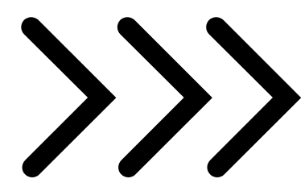

|
|
| HOME | GAMEPLAY | GAMING TECH | TIPS AND TRICKS | ABOUT US |
|
|
This iPhone gaming controller now works with Android 
Last year, a small company called Backbone Labs released arguably the best iPhone gaming controller on the market right now, the Backbone One. Starting Thursday, you’ll be able to use that controller with many more devices — including Android phones — though it won’t work exactly as you might expect and requires a new Backbone Plus subscription to set it up. Here’s how using the controller with other devices works. The Backbone One is designed to let you slot in an iPhone in landscape mode to a Lightning port on the right side of the controller. To use the Backbone One with a non-iPhone device, you can’t plop it into the controller since it requires plugging into that Lightning port. Instead, you have to pick what type of device you want to connect it to in the Backbone app settings menu and then hook up the device to the controller with a Lightning-to-USB cable. (The Backbone One has a Lightning port to plug the cable into.)  |